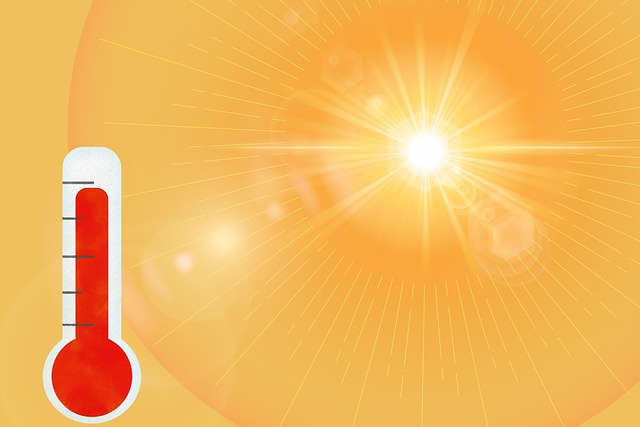

1.1 ¿A cuántos grados está la clase?

¡Qué calor hace! Con esta temperatura cuesta todo mucho más, ¿no crees?
Durante los días de más calor, seguro que has notado que cuesta concentrarse, hacer deporte o incluso moverse. Por eso vamos a trabajar como científicas y científicos para estudiar un problema real que nos afecta cada día: las altas temperaturas en el aula.
¿Nuestro reto?
Medir la temperatura en el aula a lo largo del día con la placa EchidnaBlack2, recoger los datos en gráficas con EchidnaScratch y, con esa información, proponer soluciones: ¿será mejor abrir ventanas? ¿Mover las mesas? ¿Poner plantas o cortinas?
¡Vamos a usar la ciencia y la tecnología para transformar nuestra clase en un espacio más saludable, cómodo y fresco!

Lectura facilitada
¡Qué calor hace!
Cuando hace mucho calor, es más difícil concentrarse o moverse en clase. Por eso vamos a investigar cómo cambia la temperatura en el aula durante el día, usando la placa EchidnaBlack2.
Después, con los datos, pensaremos qué podemos hacer para que la clase sea un lugar más fresco y cómodo.